Mechanical Engineering · San Diego State · Class of 2028
Carlo Augustine Makeever Mechanical engineer building toward a career in materials R&D
I lead lower-airframe structures for a liquid rocket, do materials research in two SDSU labs, and spent 2025 on the Curiosity thermal team at JPL. Looking for summer 2027 internships in structures, materials, thermal, or test.
Deployed to MarsSupported a Curiosity heater-table update that was sent to the rover (JPL, 2025)
13-person teamLead for lower airframe and fin can, SDSU Rocket Project
Flown, L1Designed, printed, built, and flew my high-power cert rocket
43 vs 40 meVMy DFT MoTe₂ phase energy vs. the published value
01
Projects
Work in progress. I've tried to be clear about which parts are finished and which aren't.
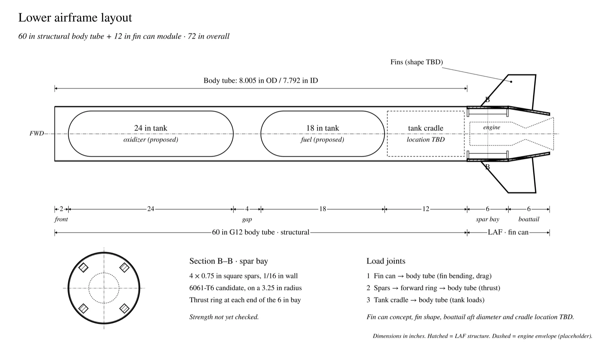
Fig. 1 Lower airframe layout. 60 in G12 tube plus a 12 in fin-can module. Tank sizes and cradle location are still proposals.
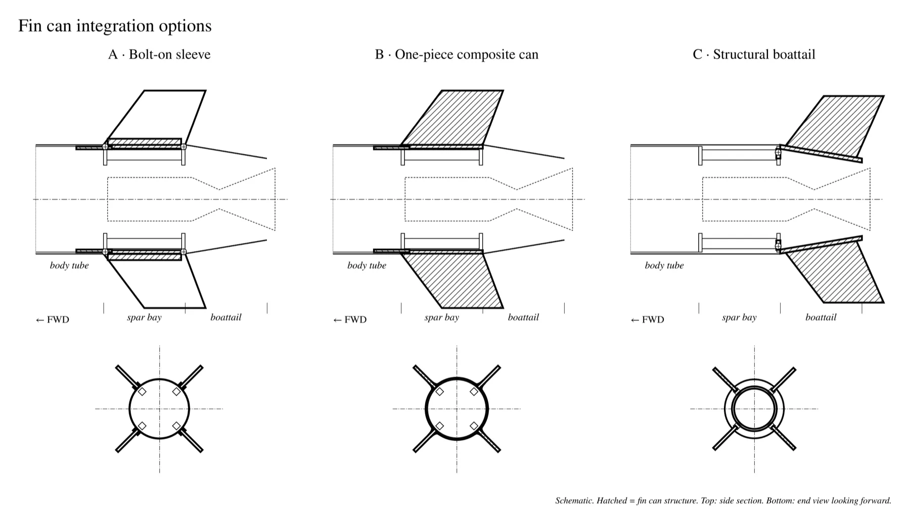
Fig. 2 The three fin-can concepts we reviewed.
SDSU Rocket Project · Lower Airframe Lead · Aug 2026 → now
in design
Liquid Rocket Lower Airframe & Fin Can
Role
Sub-team lead, 13 people
Owns
Load cases, acceptance criteria, propulsion interface, spar and fin-can trades
Result
3 fin-can concepts reviewed; legacy spar frame ruled out before any cutting
I lead a 13-person sub-team on the aft end of the vehicle: the structure between the tanks and the engine, the spars that carry thrust forward, and the fin can.
So far most of the work has been setting up the problem properly. That means load cases and acceptance criteria, an interface with propulsion, and spar trade studies on cross-section, material, and isogrid pocketing. The trade studies use hand calcs first and FEA second.
SDSU ANCS · Structures & Materials Lead · Sep–Oct 2026
flown
ANCS Level 1 High-Power Rocket
Role
Designed, built, and flew it
Key call
Fins 3.03 → 4 mm: about 2.3× bending stiffness for 1.32× mass
Result
Flew; CAD caught a fin-tab clash before printing
This is my NAR Level 1 certification rocket. It uses a 2.56 in LOC airframe and a 38 mm motor mount. The nose and fins are printed in ABS, so every custom part had to fit a 300 mm printer. That one constraint shortened the nose from 345 mm to 295 mm.
I went from 3.03 mm fins to 4 mm. On paper that's about 2.3× the bending stiffness for 1.32× the mass, and I think that's worth it on a fin that hits the ground every flight.
Fig. 5 XFS Concept A in OpenVSP: a small delta canard, a cranked-arrow wing, and fins on an area-ruled body.
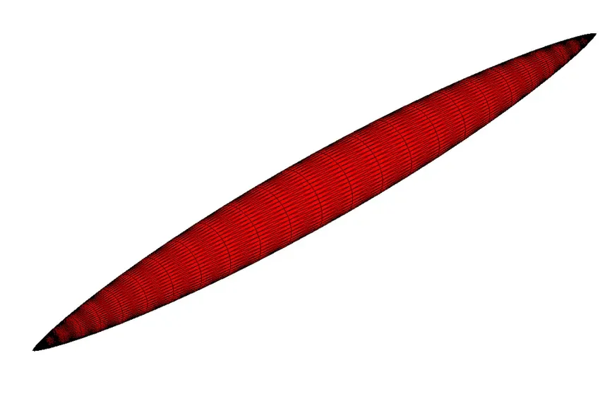
Fig. 6 The Sears–Haack baseline body (fineness ratio 12) that everything else is cut from.
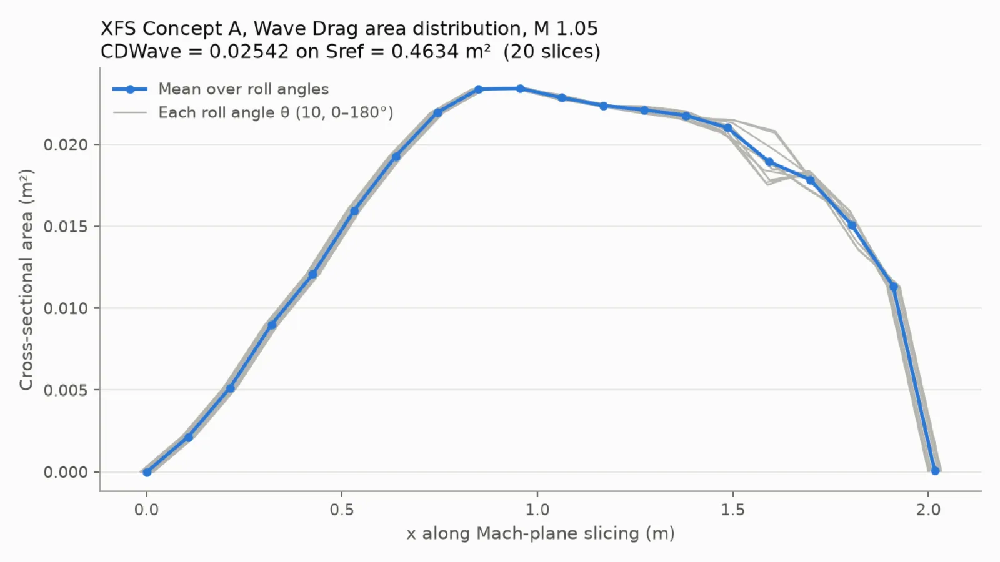
Fig. 7 Area distribution at M 1.05. CD,wave = 0.0254.
SDSU Experimental Flight Sciences · Founder · Oct 2026 → now
early concept
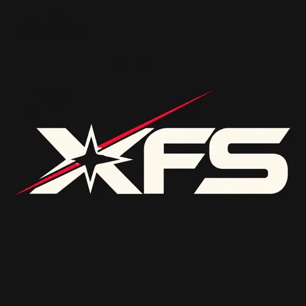
XFS: Toward a Transonic RC Aircraft
Role
Founder; wrote the area-rule script and runs the analysis
Result
CD,wave = 0.0254 at M 1.05 on Concept A (first pass)
Can a turbine RC aircraft get close to Mach 1 at a size a student group can actually build? I'm working that out with the simplest tools first.
I generate a Sears–Haack body in Python and area-rule it around the wing and tail. Then I push the stations into OpenVSP and run its wave-drag tool. Alongside that I'm keeping thrust–drag budgets for four turbine options and an OpenFOAM RANS setup in a container.
PythonOpenVSPOpenFOAMDockerarea rule
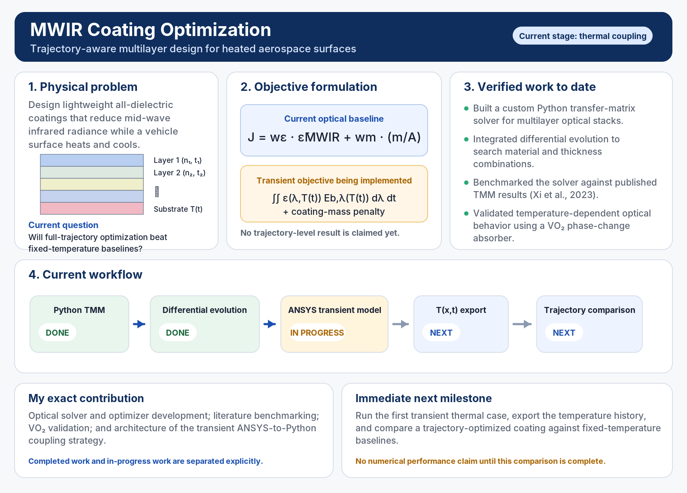
Fig. 8 MWIR coating workflow and where it currently stands.
SDSU Materials Lab · Research Assistant · May 2026 → now
thermal coupling in progress
Trajectory-Integrated MWIR Coating Optimization
Role
Wrote the optical solver and optimizer
Result
Solver matches Xi et al. (2023); VO₂ temperature behavior checked
I wrote a transfer-matrix solver in Python and checked it against published results. Then I put differential evolution on top to design multilayer coatings with a lower mid-wave infrared signature. The open question is whether optimizing against a full temperature history gives a better coating than optimizing at one temperature.
In the same lab I'm building an Ansys APDL thermal-to-structural workflow for layered ceramic tiles. I'm also computing carbon/epoxy RVE properties in Material Designer.
Fig. 9 MoTe₂ workflow: DFT baseline, then potential validation, then radiation damage.
SDSU Computational Materials Lab · Undergraduate RA · Jul 2026 → now
DFT baseline
MoTe₂ Phase Switching Under Radiation
Role
DFT baseline and validation workflow
Result
43 meV/f.u. vs. 40 meV published
MoTe₂ can flip between a semiconducting and a metallic phase, which makes it interesting for low-power memory. I'm asking whether it keeps switching reliably after radiation damage builds up under Mars-surface conditions.
The DFT baseline gives 43 meV per formula unit between phases, against 40 meV published. Next is a LAMMPS radiation-cascade and kinetic Monte Carlo workflow.
VASP / PBEPython / ASELAMMPSKMCHPC
02
Drawing board
Diagrams I've drawn this semester to explain a design or settle an argument. Click any of them to see it full size.
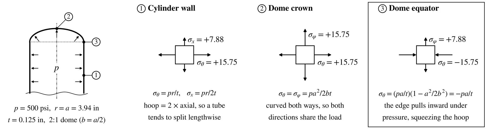
Where a pressure tank fails first500 psi, 2:1 dome. The equator governs, because hoop stress goes compressive there.
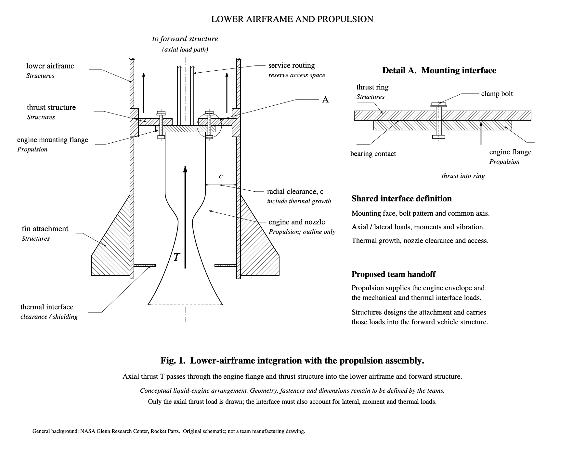
Structures ↔ propulsion interfaceThe thrust path from the engine flange through the thrust ring into the airframe.
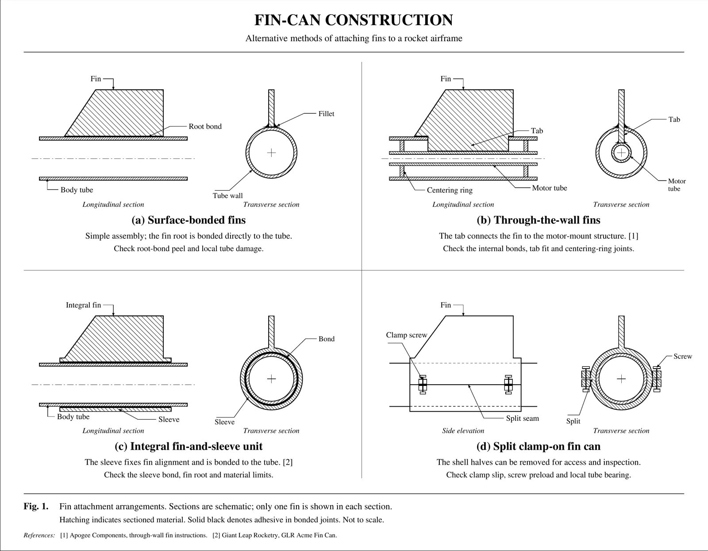
Four ways to attach a finSurface-bonded, through-the-wall, integral sleeve, and split clamp-on, with what to check for each.
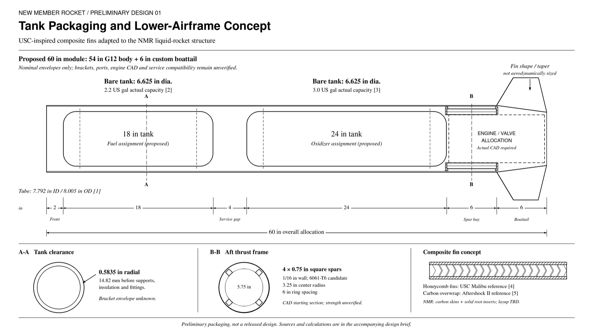
Tank packagingFitting 18 in and 24 in tanks and a thrust frame into 60 in of tube.
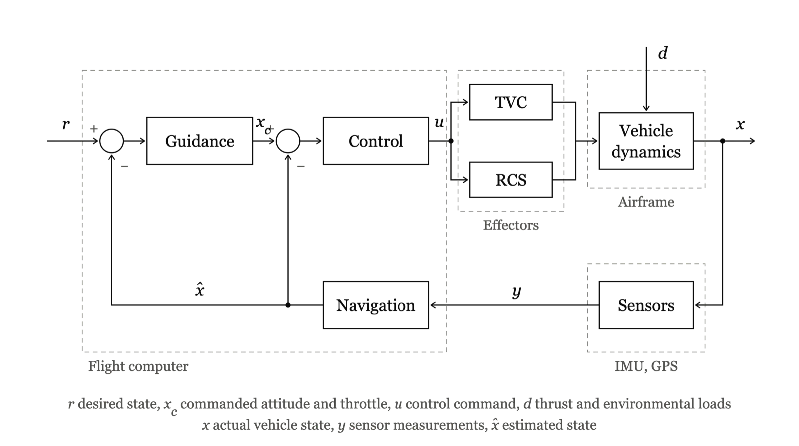
A rocket GNC loopGuidance, control, TVC and RCS, and navigation feedback, redrawn as a clean reference.
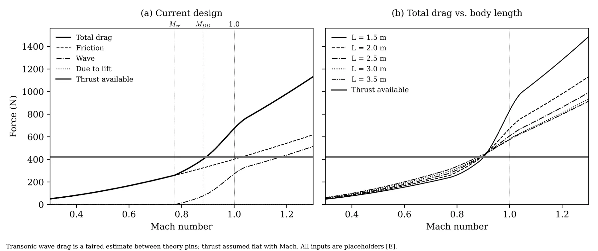
Why Mach 1 is hardA first-pass drag build-up for XFS. Wave drag takes over past MDD.
03
Experience
Jun – Nov 2025
Thermal Engineering Intern, MSL Thermal Systems
NASA Jet Propulsion Laboratory · Pasadena
I supported Curiosity heater-table updates and thermal-margin checks for seasonal Martian loads, including one update that was sent to the rover. I also built Python tools that line up 12+ years of thermal and heating-event data for analysis and anomaly review. Hourly ingestion and validation run on their own through Bash and cron.
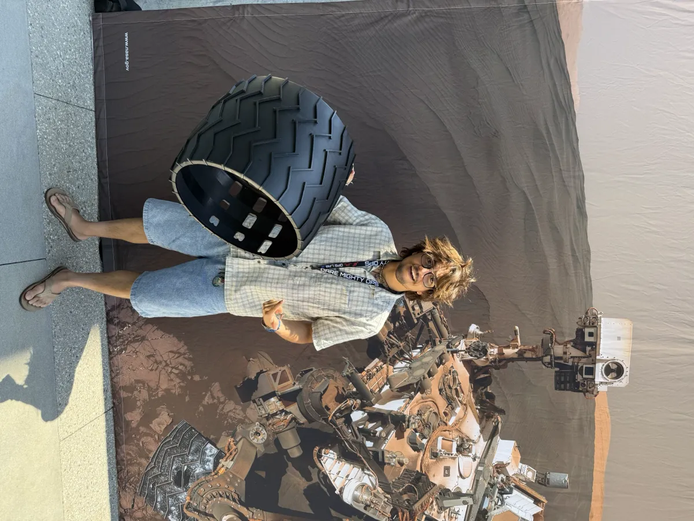
Holding a rover wheel at JPL.
Summer 2024
William M. Lapenta Data & Cloud Engineering Intern
NOAA · Center for Operational Oceanographic Products & Services
I ported the San Francisco Bay Operational Forecast System from an on-prem supercomputer to the NOS cloud sandbox. I also helped write one of the group's first netCDF → GRIB2 converters, including the regridding.
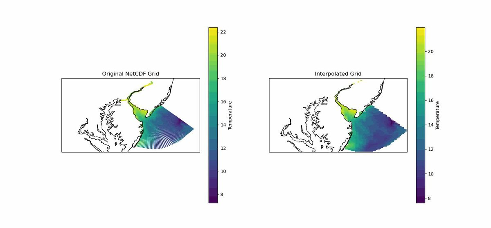
Original grid resampled onto the target grid.
2025 – 26
Lead Control Systems Test Engineer
Gaucho Rocket Club · UC Santa Barbara
I built Simulink models for flight control and thrust-vector work and designed the tests to validate them before they touched hardware.
May – Sep 2023
Electronics Validation & Test
Scripps Institution of Oceanography · Martz Lab
I bench-tested custom sensor circuits for saltwater deployment with an oscilloscope, a multimeter, and an ozone chamber. I also tracked down faults in power regulation, signal conditioning, and the ADC interface, and did CAD for the housings.
Summer 2023
California Current Ecosystem Modeling
Scripps · CCE-LTER, Dr. Art Miller's lab
I learned MATLAB to work with large ocean-model output and built seasonal-cycle maps that connect upwelling and El Niño to plankton response.
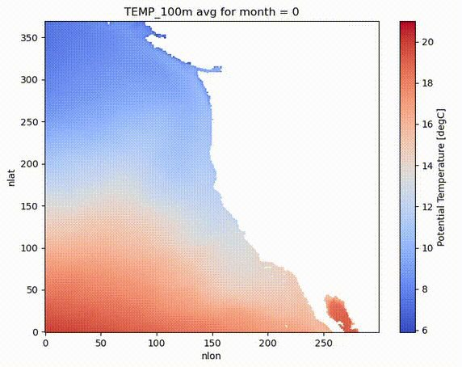
Modeled upper-ocean temperature.
04
Earlier projects
Older projects and class work. Some of the write-ups are still unfinished, and I've marked which ones.
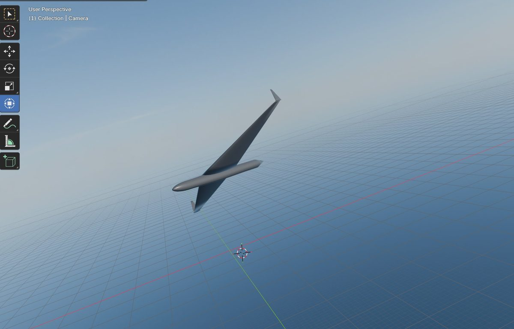
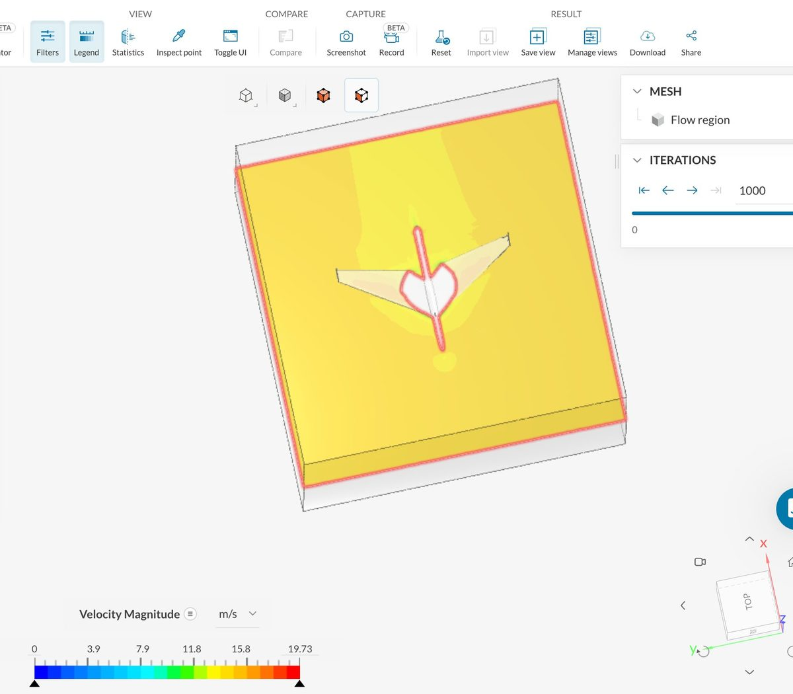
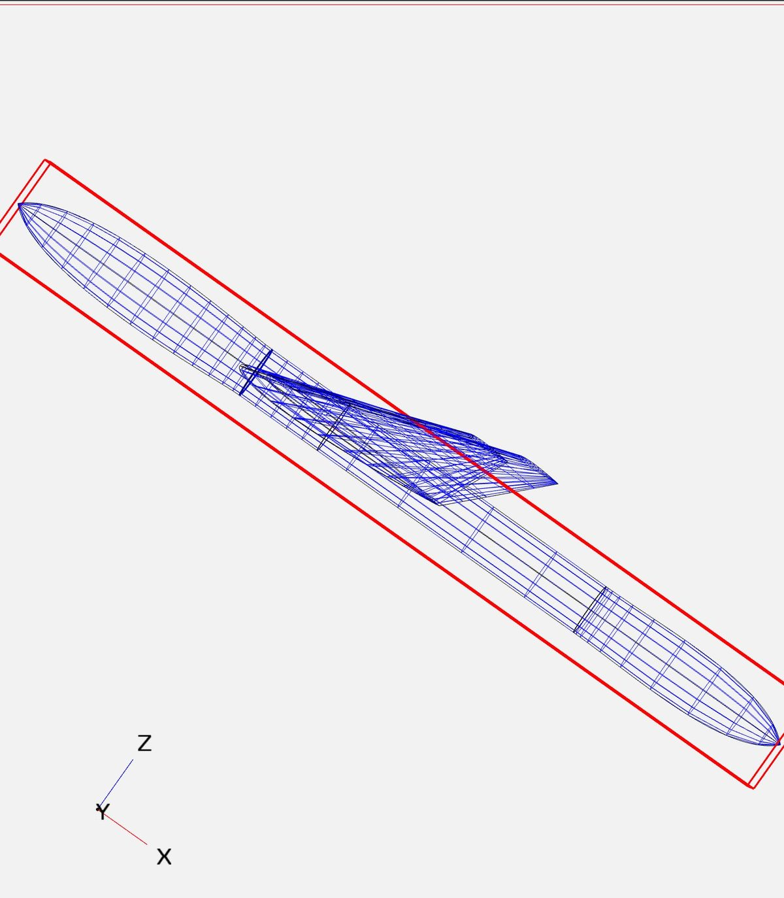
Personal project
Deployable Tactical V-Wing UAV
Can you split a flying wing into sections you carry in a pack and bolt together in the field, without the seams costing too much drag? I worked from geometry in OpenVSP to RANS in OpenFOAM. The answer mostly depends on how flush the joint is.
OpenVSPVSPAEROOpenFOAMBlender
Vickers Hardness Testing
ME 241 · Oct 2026
HV10 on five materials from aluminum to zirconia, with a proper uncertainty analysis.
Sn–Pb Phase Diagram & Cooling Curve
ME 241 · Sep 2026
I recorded a cooling curve for 90Sn–10Pb, picked the liquidus and eutectic points off the slope changes, and compared them with the phase diagram.
A full conceptual design cycle for a long-endurance UAV, from mission and weight budget to a sized wing.
Nose Cone Geometry CFD Study
OpenFOAM · ParaView
A drag comparison across nose cone families at the same flow conditions.
Thrust Vector Control Modeling
Gaucho Rocket Club · UCSB
A closed-loop TVC model in Simulink to support flight-control development and hardware tests.
Raspberry Pi Instant Camera
Hardware
A small build to make myself deal with real hardware: wiring, software, and packaging.
05
Updates
A running log, newest first. Short notes on what changed and what I learned.
30 Oct 2026
XFS
First wave-drag run on XFS Concept A in OpenVSP at Mach 1.05. CD,wave = 0.0254 on Sref = 0.463 m², with 20 slices and 10 roll angles. The area curve is mostly smooth. The scatter between roll angles shows up aft of 1.5 m where the tail surfaces start.
Oct 2026
New group
Started SDSU Experimental Flight Sciences. First job: a 1.5 m-span UAV testbed in OpenVSP, a containerized OpenFOAM RANS setup for nose shape and fineness ratio, and thrust–drag budgets across four turbine options.
24 Oct 2026
Rocket Project
Ran the design review for three fin-can concepts: a bolt-on sleeve, a one-piece composite can, and a structural boattail. The review caught a dimensional mismatch that rules out reusing the old spar frame. Better to find that on paper.
Oct 2026
ANCS · L1
Flew my Level 1 high-power rocket in the desert. I designed it in OpenRocket and SolidWorks and printed the nose and fins in ABS. The CAD caught a fin-tab and centering-ring clash before anything got printed.
26 Oct 2026
Rocket Project
Laid out the lower airframe work breakdown for the rest of the semester. That's 12 trade studies across spars, fin can, fins, integration, and analysis. Each one ends in CAD, with reviews on Nov 13 and Dec 4 and CAD release on Dec 11.
11 Oct 2026
ME 241
Vickers hardness lab (HV10) on 6061-T6 aluminum, 1018 steel, 360 brass, 110 copper, and zirconia. Zirconia came in at 1600 ± 200 HV against 250 ± 10 for the steel, and it had by far the most scatter. Writing the uncertainty section taught me more than the test did.
8 Oct 2026
Structures
Hand-checked membrane stresses in a 500 psi propellant tank with a 2:1 elliptical dome. The dome equator turned out to govern, not the cylinder. Hoop stress there goes compressive, so the von Mises stress rises to 20.8 ksi, which is a factor of 1.92 on an assumed 40 ksi yield. Joints, welds, and buckling aren't included yet.
Sep 2026
Rocket Project
Nose cone design review, my first structures assignment. The constraints were a 10 in body, Mach 1.4, and a 6 × 10 in payload in ABS under 6 lb. I compared tangent ogive, parabolic, and Von Kármán at the same length and wall thickness, then picked Von Kármán at 36 in.
Aug 2026
SDSU
Started at San Diego State in mechanical engineering. I took on lower airframe lead for the Rocket Project and structures lead for ANCS.
Jul 2026
MoTe₂
Joined the Computational Materials lab. My first DFT number for the monolayer MoTe₂ phase-energy difference was 43 meV per formula unit, against 40 meV published. That's close enough to keep going and not close enough to stop checking.
Nov 2025
JPL
Finished my internship with the MSL thermal team. A heater-table update I helped support was sent up to Curiosity.
06
About
I'll admit my background looks unusual. Most of my early hands-on work was in high-performance computing, sensor hardware, and flight software. At its core I think that makes me a systems person. Since I was a kid I've liked connecting the pieces, experimenting, and figuring out how things work and why. That's still the foundation.
I came to SDSU to go deeper into mechanics and materials and to point all of it at things I can build and be proud of. That's why aerospace pulls at me so much. This year that has meant fin cans, printed nose cones, and a lot of hand calcs I check twice.
"The greatest love you can give the universe is to learn about it, and the greatest love you can give yourself is to make something you're proud of."
Design & fabrication
SolidWorks, Fusion 360, OpenVSP, OpenRocket, 3D printing, composite layup
Analysis
Thermal/structural FEA, Ansys Mechanical, APDL, Material Designer, OpenFOAM, VSPAERO, ParaView
Materials & modeling
DFT (VASP), LAMMPS, transfer-matrix optics, hardness and impact testing
I'm looking for summer 2027 internships or research in aerospace structures, thermal, or test. If you're working on something that flies, I'd like to hear about it.
The lower airframe (LAF) is everything aft of the forward structure: a 60 in G12 structural tube that holds the propellant tanks and a tank cradle, then a 12 in fin-can module with a spar bay and boattail around the engine. Thrust comes in through the engine flange and a thrust ring. From there it has to go through the spars and into the body tube without anything bending where it shouldn't.
How I set it up
With 13 people on the team, the biggest risk early on was everyone designing against different numbers. The first thing I did was write one shared set of requirements: dimensions, interfaces, load cases, and mass targets. Propulsion, flight analysis, and the structures lead feed into it. Spars and the fin-to-boattail joint run in parallel with fin core and skin materials, then come back together in one integrated CAD model for review (figure above).
Packaging and interfaces
Preliminary tank packaging: 54 in of G12 body plus a 6 in custom boattail. Section B–B shows the aft thrust frame.Where structures and propulsion meet. I drew this so both teams agree on who owns the flange, the bolt pattern, and the clearance for thermal growth.
Tank pressure check
As a first sanity check on the tank walls I ran membrane theory on a 500 psi tank (r = 3.94 in, t = 0.125 in, 2:1 dome). The cylinder wall and dome crown are fine. At the dome equator, though, the hoop stress turns compressive. Because the two principal stresses have opposite signs, von Mises goes up instead of down there: 20.8 ksi, which is a factor of 1.92 on an assumed 40 ksi yield. Joint bending, welds, a design factor, and buckling under flight loads are still to come.
Stress elements at three points on the tank, in ksi.
Plan for the semester
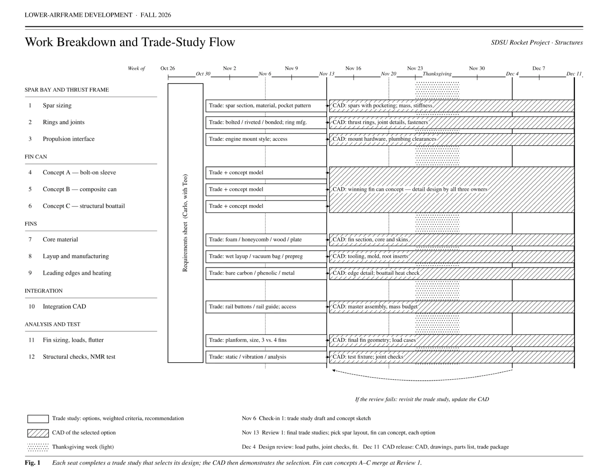
Every owner runs a trade study that picks a design, then CAD shows the pick works. Fin-can concepts A–C merge at the first review.
Decisions so far
DoneReviewed three fin-can concepts: a bolt-on sleeve, a one-piece composite can, and a structural boattail. The review found a dimensional incompatibility that rules out reusing the legacy spar frame.
DoneProposed spar bay layout: 4 × 0.75 in square spars with 1/16 in wall on a 3.25 in radius, with a thrust ring at each end of the 6 in bay. 6061-T6 is the candidate material.
NowSpar trade studies on cross-section, material, and isogrid pocketing. Hand calcs first, then FEA to compare mass against stiffness.
OpenFin shape, boattail aft diameter, and tank cradle location. Spar strength hasn't been checked yet.
What I've learned
Most of the hard problems so far have been about interfaces, not stress. Who owns the bolt pattern, how much radial clearance the nozzle needs for thermal growth, and which team carries which load. Putting those on paper early has saved us more time than any single calculation.
Dimensions shown are working values from team design reviews and will change. Schematics are my own originals, not manufacturing drawings.
SDSU Aerospace Navigation & Control Society · Structures & Materials Lead · Fall 2026
OpenRocket · SolidWorks · ABS printing · LOC BT-2.56 · 38 mm motor mount
Goal
Build a safe, manufacturable Level 1 certification rocket around a purchased 2.56 in LOC body tube and a 38 mm I-class motor, with every custom part printable on a 300 × 300 × 300 mm printer. The workflow was OpenRocket first, then CAD for the custom parts, then a check that the CAD still matched the sim, then print, build, and fly.
Design changes and why
Nose: The first version was a 280 mm cone plus a 65 mm shoulder, 345 mm total. That doesn't fit the printer, so I cut it to 235 mm plus a 60 mm shoulder, 295 mm in one piece. I kept the Von Kármán profile because it's the standard low-drag Haack shape. The real benefit here is a smooth, credible nose, not extra apogee.
Fins: I went from 3.03 mm to 4 mm thick. Since bending stiffness goes with t³, that's about 2.3× the stiffness for 1.32× the mass. The fins are a swept clipped-delta planform with through-wall tabs.
Fit check: The CAD showed a fin tab interfering with a centering ring before anything was printed. I moved the ring and measured the received tube with calipers before freezing the slots.
Recovery: A 30 in compact elliptical chute on 1/4 in Kevlar shock cord with a Nomex protector.
How I wrote it up
In the write-up I kept three things separate: facts backed by a source, calculations from the current geometry, and judgment calls. Each judgment call is labeled as a recommendation or an open verification item, not presented as proven. I'd like to keep doing it that way.
Turbine RC jets are fast, but near Mach 1 the drag rises sharply. The plot above is a first-pass drag build-up: friction, wave, and drag due to lift, compared with flat available thrust. It shows why. Below M ≈ 0.8, friction drag is most of the total. Past the drag-divergence Mach number, wave drag takes over and total drag passes the thrust line quickly. Making the body longer helps above Mach 1 but costs a little friction drag below it.
Method
Generate a Sears–Haack body at a chosen fineness ratio in Python.
Add the cross-sectional area of the wing, canard, and fins at each station. Then pinch the fuselage so the total follows a Sears–Haack distribution with the same length and volume (Whitcomb area rule).
Export the stations to OpenVSP and run its wave-drag tool. The first run on Concept A at M 1.05 gave CD,wave = 0.0254 on Sref = 0.463 m².
Set up a containerized OpenFOAM RANS case to compare nose shapes and fineness ratios on a 1.5 m-span testbed.
Design decisions on Concept A
Concept A as modeled in OpenVSP.
Start from a Sears–Haack body. For a given length and volume, it's the shape with the lowest supersonic wave drag, which makes it the right reference before anything gets bolted on. I picked a fineness ratio of 12 (length over max diameter) because longer and thinner lowers wave drag. The cost is more wetted area and a longer, more flexible fuselage, which is the trade in the Mach sweep above.
Area-rule the whole aircraft, not just the body. Near Mach 1, wave drag follows the total cross-sectional area at each station: body plus wing, canard, and fins. So I set the total to follow a Sears–Haack curve with the same length and volume, and the fuselage gets whatever is left over. That gives the body a waist where the wing is thickest. A naive "nice body plus wings" layout puts a big bump in the curve.
Open the tail for the nozzle. A true Sears–Haack body closes to a point, which leaves nowhere for the exhaust to go. I use a longer equivalent body (1.15 L) and cut it off at L, so the cut face becomes the nozzle exit.
Don't squeeze the engine. From 40% of length to the tail, the fuselage can't shrink below 55% of its max radius, as a placeholder turbine and duct envelope. Wherever that limit wins, the body sits above the ideal area curve, and the script flags it.
Thin, swept, cranked-arrow wing. 70° sweep inboard and about 52° outboard keeps the inboard leading edge well behind the Mach cone and leaves room at the root for structure and fuel. I used a biconvex section at 3.5% thickness, because thickness is one of the biggest drivers of transonic wave drag.
Small delta canard and twin fins at 4% thickness. The canard is for pitch trim as the center of pressure moves aft through transonic flight. The twin fins handle directional stability. They're kept small and thin because every bit of their area counts toward the same area budget.
The Sears–Haack baseline body before area ruling.
What this isn't yet
The planform numbers and drag inputs are placeholders I'm using to learn the method. Nothing has been sized, and no stability, inlet, or flight-performance claims are validated. The thrust–drag budgets across four turbine options are there to decide whether the idea is worth pursuing.
Most multilayer infrared-coating studies optimize at one temperature, or collapse a changing thermal history into one representative condition. My project asks whether optimizing directly against the full surface-temperature trajectory produces a meaningfully better coating for reducing MWIR signature.
Completed optical work
Built a custom Python transfer-matrix solver for multilayer optical stacks.
Integrated differential evolution to search layer materials and thicknesses.
Benchmarked the solver against published transfer-matrix results from Xi et al. (2023).
Validated temperature-dependent optical behavior using a VO₂ phase-change absorber across its insulator-to-metal transition.
Objective
The current optical baseline trades MWIR emissivity against coating mass:
J = wε ε̄MWIR + wm(m/A)
The transient branch will replace the single-temperature optical term with time-integrated spectral radiance along the simulated surface-temperature history. That coupling is the part I'm building now, so I'm not claiming a trajectory-level result yet.
Transient Ansys branch: status
DefinedElement configuration, thermal-mass properties, boundary-condition strategy, adaptive time stepping, and temperature-output requirements.
In progressBuilding the transient thermal model with either a layered shell or a through-thickness solid, and resolving the temperature history through the surface and laminate.
NextExport T(x,t) to the Python TMM kernel and evaluate spectral emissivity and radiance at each time step.
ComparisonBenchmark trajectory-aware optimization against fixed-temperature and uniformly weighted temperature baselines.
Related lab work
I'm also developing an Ansys APDL workflow for sequential thermal-to-structural FEA of layered ceramic tiles, with temperature-dependent properties and convection and radiation boundary conditions. Separately, I computed effective thermal conductivity and stiffness inputs for carbon/epoxy representative volume elements at 70% fiber volume in Ansys Material Designer.
My contribution
I developed the optical solver and optimization workflow, did the literature benchmark and VO₂ validation, and designed the transient Ansys-to-Python coupling. The transient thermal simulations and the trajectory comparison are still in progress, not completed results.
SDSU Computational Materials Research Lab · Undergraduate RA · Jul 2026 → now
VASP / PBE · Python / ASE · MLIP validation · LAMMPS · kinetic Monte Carlo · HPC
Physical problem
MoTe₂ can switch reversibly between the semiconducting 2H phase and the metallic 1T′ phase, which makes it a candidate for non-volatile phase-change memory. In a spacecraft or on the Martian surface, displacement damage and vacancy buildup may shift phase stability, change switching barriers, and eventually make the device unreliable.
DFT baseline
I have relaxed structures for both phases. The 1T′–2H energy difference comes out to 43 meV per formula unit with 2H lower, against a published value of 40 meV. The 1T′ Mo–Mo dimer distance is 2.89 Å.
The first calculations used a 300 eV cutoff and fixed cells. For matched reruns I'm using 500 eV, 18 Å of vacuum, and ISIF = 3. That removes inherited cell strain so the phase-energy comparison holds up.
Workflow
CompletedRelaxed 2H and 1T′ structures and did the initial phase-ordering, lattice, and dimerization checks.
CurrentConverged, matched DFT runs and a check of the per-formula-unit energy normalization.
NextValidate a machine-learned interatomic potential against DFT energies, forces, structures, and phase ordering.
LaterRun LAMMPS radiation-cascade MD and kinetic Monte Carlo under Mars-surface conditions, then map how switching degrades.
My contribution
I interpret and validate the relaxed structures, normalize phase energies, check the defining 1T′ dimerization, define the higher-fidelity rerun protocol, and build the Python/ASE validation workflow that every later MLIP and cascade step depends on. None of the MLIP training, cascade simulation, or device-performance work is presented here as finished.
Most fixed-wing ISR platforms are way too big or structurally complicated to actually carry and deploy in the field. I wanted to see if a V-wing configuration could be split into sections you could pack out and bolt together on-site without paying a huge aerodynamic penalty for the seams.
I went with a flying wing because you get good span efficiency and no tail drag, which leaves some margin to absorb whatever the seams cost. The catch is that flying wings are inherently pitch unstable, so dihedral and sweep are doing a lot of the work on stability.
Geometry and configuration
I built everything in OpenVSP, starting with a central fuselage pod that the wing panels attach to. The pod is both the payload housing and the structural spine. I ran a bunch of VSPAERO iterations sweeping dihedral and sweep angle before landing on what you see in the render.
Getting the mesh to behave at the wing-pod junction took longer than I expected. OpenVSP's surface mesher produces irregular triangles at blended junctions, and my early VSPAERO runs were throwing off-axis moments that didn't match my hand calcs. I had to go back and clean up those intersections before I trusted the panel results.
CFD and seam drag
The CFD ran in OpenFOAM using simpleFoam: steady-state incompressible RANS with the k-omega SST turbulence model. The inlet is about 3 chord lengths upstream and the outlet 8 chord lengths downstream.
I modeled the seams as a surface gap and step discontinuity at the panel joints. My first mesh was bad. The y+ values near the seam were way too high, over 100 in some spots, so the wall treatment wasn't actually resolving the boundary layer where I needed it. I refined the mesh locally around the seam features and reran. The velocity contour shown is from the corrected run.
Main finding: seam drag depends a lot on gap width and how flush the surface is. A tight flush joint is manageable. A proud or recessed edge is way worse than the geometry would suggest because of the separation at the step.
Dihedral and stability
I swept dihedral angle through VSPAERO and looked at static margin and Dutch roll characteristics at each point. More dihedral improves roll stability but pushes the neutral point forward and eats into pitch stability margin. The configuration in the render is the best tradeoff from that sweep.
What I'd do differently
Everything here is simulation only, and the CFD hasn't been validated against physical data. VSPAERO is also inviscid, so it misses the separated flow I care most about. The real next step is building a scaled section and running it in a wind tunnel to get a validation point for the seam drag numbers.
I'd also redo the mesh with structured hexahedra instead of snappyHexMesh. The unstructured approach is faster to set up, but near-wall resolution suffers for the same cell count, and that matters a lot for this kind of boundary layer study.
ME 241 Materials Lab · SDSU · Oct 2026 · individual report
Vickers HV10 · MATLAB · error propagation
What we did
I measured HV10 on 6061-T6 aluminum, 1018 cold-rolled steel, 360 half-hard brass, 110 copper, and a zirconia ceramic. I used a macro Vickers tester at 98.07 N (10 kgf) for 15 s, with three indents per material and six diagonal readings each. The average deviation of the diagonals was carried through into hardness as the uncertainty.
Material
HV10
6061-T6 aluminum
107 ± 2
1018 steel
250 ± 10
360 brass
141 ± 5
110 copper
108 ± 3
Zirconia (ZrO₂)
1600 ± 200
What stood out
The metals all fell between about 100 and 250 HV with tight error bars. Zirconia was more than six times harder than the steel and had much more scatter. Hard, brittle ceramics leave small indents with fuzzy, sometimes cracked corners, so measuring the diagonal becomes the main source of error. Seeing that in my own data made the hardness numbers in a datasheet a lot more concrete.
ALBATROSS-1 was a full conceptual design study for a long-endurance, low-altitude fixed-wing UAV. I wanted to actually work through a complete design cycle from mission requirements to a sized airframe, rather than just sketch something and call it a concept.
Design process
I started from a weight budget and mission profile and worked backward to size the wing using a simplified Breguet range equation. I iterated the wing geometry in OpenVSP to hit the required cruise lift coefficient while keeping the aspect ratio within structural limits for a composite spar.
The aerodynamic analysis and structural sizing write-ups are still in progress.
There's a lot of conventional wisdom in rocketry about nose cone geometry, but I wanted to actually run the numbers on a controlled set of profiles instead of just trusting the Barrowman equations. It's a direct drag comparison across common nose cone families at the same flow conditions.
Where it went next
The same question came up in my first SDSU Rocket Project assignment. That was a 10 in, Mach 1.4 nose cone in ABS with a 6 × 10 in payload and a 6 lb limit. I held length, wall thickness, and material fixed and compared tangent ogive, parabolic, and Von Kármán profiles. I picked Von Kármán at the full 36 in length (fineness ratio 3.6) to keep transonic wave drag down. I used the same reasoning on my L1 nose.
The full CFD setup and results write-up is still in progress.
As lead control systems test engineer for the Gaucho Rocket Club, I was responsible for modeling and validating the TVC system for the team's vehicle. TVC is the main source of flight control during boost. If it doesn't work, the vehicle is unstable from liftoff.
System model, control design, and test write-ups are still in progress.
Most of my work is in simulation. I built this to force myself to deal with real hardware problems. An instant camera is small enough in scope to actually finish, but it has enough real integration challenges that you can't skip the hard parts.
On an active Mars mission, the thermal team has to keep rover components inside tight temperature limits, which means constant preheat diagnostics. That data was scattered across systems and checked by hand, and there was no standard way to see long-term trends. It was slow and easy to get wrong.
What I built
I wrote modular Python tools that work as one pipeline. They pull heating events from the operations database, compute performance margins automatically, and generate the formatted tactical reports the thermal team posts. I also brought 12+ years of thermal and heating-event history into time-aligned datasets for analysis and anomaly review. The whole thing runs hourly on cron without anyone touching it.
Thermal support
Beyond the tooling, I supported heater-table updates and thermal-margin assessments for seasonal Martian loads, including an update that was deployed to the rover. I also helped with daily downlink analysis and command validation.
Working in flight ops
The harder half was integration. Everything had to fit into existing flight-operations infrastructure and match the team's conventions and config structures. I spent real time fighting environment and dependency issues across machines before it ran cleanly end to end, working alongside thermal, operations, and systems engineers.
This work involves export-controlled mission data, so the description here is intentionally high-level. Technical specifics, schematics, and internal tooling are left out.
NOAA Center for Operational Oceanographic Products & Services · William M. Lapenta Internship · 2024
Python · R · HPC · netCDF / GRIB2 · interpolation
The problem
NOAA's San Francisco Bay Operational Forecast System (SFBOFS) ran on an on-premise supercomputer. The goal was to get it running on the National Ocean Service cloud sandbox, which meant moving the model and reconciling some awkward data-format differences along the way.
HPC → cloud port
I ported the system from the on-prem NOAA HPC to the cloud sandbox, reusing the existing finite-element mesh and grid. From there I ran SFBOFS under different forcing conditions and looked at how water level, currents, temperature, and salinity responded. That included comparing global-model and regional-model forcing to see which performed better.
netCDF → GRIB2
A big chunk of the work was format conversion. I helped build one of the group's first netCDF-to-GRIB2 converters, in Python and R. The hard part is regridding. The source data lives on an unstructured grid and GRIB2 wants a regular one, so I implemented nearest-neighbor and bilinear interpolation to move values across without distorting them.
Side build: sea level stripes
I also built a small tool that pulls hourly water-level data from the NOAA API, resamples it to monthly means, and shows long-term trends as "climate stripes" for each tide station. The panels show La Jolla, San Diego, Honolulu, and Kodiak Island from the early 1900s to today.
I led control-systems testing for the club's flight-control and thrust-vector work. That meant building the Simulink models, designing the tests that exercise them, and checking results against expected behavior before anything went near hardware. The TVC modeling in Earlier projects came out of this role.
I validated custom environmental sensor circuits for saltwater deployment using oscilloscope and multimeter bench tests and controlled ozone-chamber testing. When something failed, I isolated the fault in the power regulation, signal conditioning, or ADC interface, documented the failure mode, and checked the fix before field deployment.
I also designed CAD for sensor housings and structural parts, and helped with wiring diagrams and schematics for self-calibrating ocean sensors.
What it taught me
Ocean hardware fails from saltwater corrosion, biofouling, and pressure, not from the ideal design. That's where I learned how much of real engineering is integration constraints.
Scripps Institution of Oceanography, CCE-LTER, Dr. Art Miller's lab · 2023
MATLAB · numerical models · data visualization · statistics
The work
I worked with output from a regional ocean model of the California Current: POP for the physics, COBALT biogeochemistry, and MARBL ecology. I picked up MATLAB to read the large output files, then built seasonal-cycle snapshots and animations of temperature and several plankton types: diatoms, small phytoplankton, coccolithophores, diazotrophs, and zooplankton.
What it showed
Averaging by month and computing anomalies let me line up physical drivers with ecological response. The coldest coastal water came during spring upwelling, diatom blooms tracked the nutrients that upwelling brought up, and the offshore and coastal phytoplankton regimes were clearly different. The maps are from my own processing of the model output.